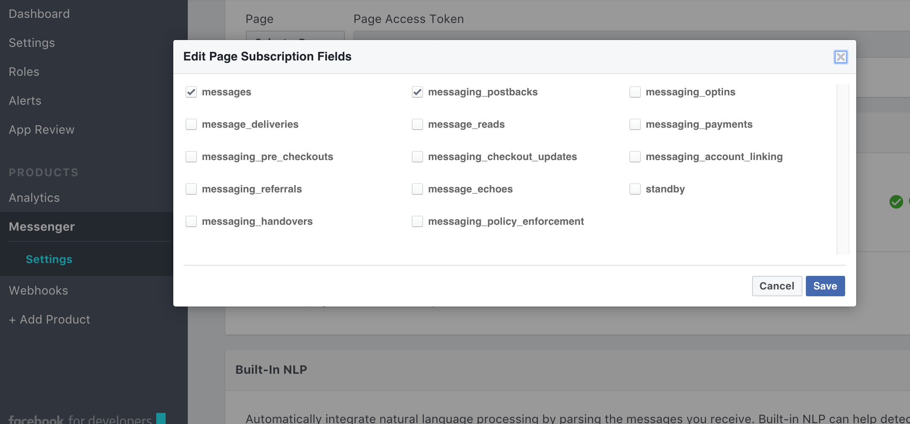
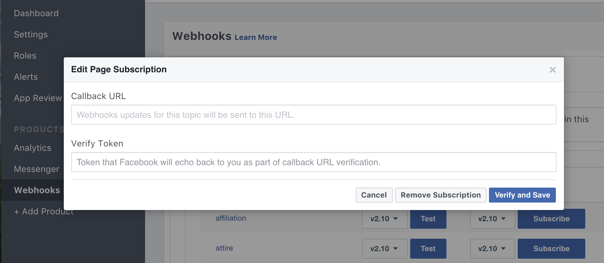

How to use
FACEBOOK SETUP
1.Set up a facebook page.
2.Go to the Facebook Developer’s Quickstart Page and click “Skip and Create App ID” at the top right. Then create a new Facebook App for your bot and give your app a name, category and contact email.

You’ll see your new App ID at the top right on the next page. Scroll down and click “Get Started” next to Messenger.

3. Now you’re in the Messenger settings for your Facebook App. There are a few things in here you’ll need to fill out in order to get your chatbot wired up to the Heroku endpoint we setup earlier.

Using the Page you created earlier (or an existing Page), click through the auth flow and you’ll receive a Page Access Token for your app.
Click on the Page Access Token to copy it to your clipboard.
4. Paste the page access token into its field in the config.py file.
5. Head over to Messenger under products in you projects facebook developer page and click on settings. Navigate to the webhooks section, click on edit events and select messages and messaging_postbacks as shown below.
Ngrok Setup
1. Download your desired bot template from the website
2. Download ngrok from their [page](https://ngrok.com/download).
3. On Linux or OSX you can unzip ngrok from a terminal with the following command.
CONFIG = {
'FACEBOOK_TOKEN': 'FACEBOOK_TOKEN_HERE',
'VERIFY_TOKEN': 'my_verify_token',
'SERVER_URL': 'SERVER_URL_HERE'
}
6. Run your bot by running python server.py after saving your changes to the server.py file.
7. Head over to your apps page on the Facebook for Developers site and under products, select webhooks.
Once selected click on edit subscription and copy your https url (as shown below) from ngrock in your terminal to the Callback URL section followed by /webhook.

According to the image above, our callback url will be
https://bd2cb171.ngrok.io/webhook
Under the Verify Token field of the page subscription, add
my_verify_token
As seen in the config.py file.

You can then click on the verify and save button to save the webhook.
HEROKU INSTUCTIONS
After clicking the click to deploy buttons below, your selected template will be hosted and deployed ontu Heroku automatically. The only issue is that the config.py file does not contain your specific Facebook page keys and server url.
To fix this, follow the following steps;
1.Dowload the heroku CLI from here.
2.Once heroku has been installed, open the heroku Dashboard. Select your newly created app and navigate to the deploy section as shown in the images below.


3.Run the code indicated in the image below to get a copy of your bot template and navigate to its folder in your terminal.

4.Open your config.py file and fill in the required variables replacing FACEBOOK_TOKEN_HERE with you facebook app pages' token and SERVER_URL_HERE with the url of your newly created heroku server.
The config.py file should look like the snippet below:
CONFIG = {
'FACEBOOK_TOKEN': 'FACEBOOK_TOKEN_HERE',
'VERIFY_TOKEN': 'my_verify_token',
'SERVER_URL': 'SERVER_URL_HERE'
}
When filled, it should look like the snippet below:
CONFIG = {
'FACEBOOK_TOKEN': 'EAAHUC2GIMSoZAioyW4orexO9tCCHvdCCnC2GIMSoZAioyW4orexO9tCCHvdCC2GIMSoZAioyW4orexO9tCCHvdCLF1mFlnqC2GIMSoZAioyW4orexO9tCCHvdCxdLF1mFlnqC2GIMSoZAioyW4orexO9tCCHvdC',
'VERIFY_TOKEN': 'my_verify_token',
'SERVER_URL': 'https://site-example-name.herokuapp.com/'
}
5.Once filled, save your config.py file and head over to the heroku dashboard and select your previously created app.
6.Once selected you should se something similar to the image below:
Navigate to the deploy section and then select the heroku-git option as shown in the image below:
Ensure you have navigated to the folder containing your bot and type in the given commands to your terminal as indicated in the image below: